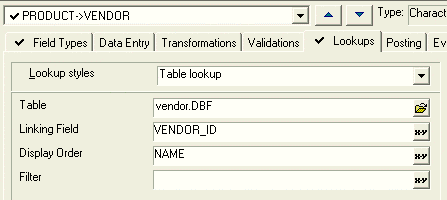
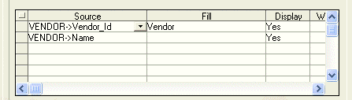
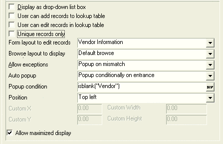

Using Field Rules to Generate A Table Lookup
The Product List tab contains an embedded browse named Browse1 that displays data from the Product table. When the user clicks on the Vendor ID column (the Vendor field of the Product table), a popup displays a lookup list of records from the Vendor table. Selecting and entry in this list and clicking the OK button returns the vendor_id from the Vendor table and saves it in the Vendor field of the Product table. The popup list is generated by the field rules associated with the Vendor field of the Product table.
Procedure: Setting Field Rules to Generate a Lookup List
The following procedure assumes that the developer has opened the form in the Form Editor. Follow these instructions to create a popup lookup list similar to that of Browse1 on the Product List tab of the Inventory form:
In the Control Panel click the Tables/Sets tab.
Right click the Product table icon and select Edit Field Rules... .
Click the Lookups tab.
Select "PRODUCT->VENDOR" from the field list.
In the Lookup styles field select "Table lookup".
Select the Vendor table in the Table list.
Select "VENDOR_ID" in the Linking Field list. This the field in the Vendor table whose value will be returned and stored in the Product->Vendor field.
Select name in the Display Order field. This sorts the Vendor->name entries alphabetically.
Skip the Filter field. An expression in this field would limit the Vendor->name entries that are shown if there was a reason not to show all of them.

Select the first column of data to appear in the popup list.
Select "VENDOR->Vendor_ID" in the first line of the Source column.
In the first line of the Fill column enter "Vendor". This is the Product table field that will receive the value of vendor_id.
Select "Yes" in the first line of the Display column.
Select the second column of data to appear in the popup list.
Select "VENDOR->Name" in the second line of the Source column.
Skip the second line of the Fill column. This data is for the user's information only. It will not be saved into the Product table.
Select "Yes" in the second line of the Display column. Picture
{kind=link}

Skip Display as Drop-down list box . This option presents the table list in a combo box format.
Skip User can add records to lookup table . This option adds the Enter button to the popup.
Skip User edit add records in lookup table . This option adds the Change button to the popup.
Skip Unique records only . The table design presumes that there are no duplicate records.
The Form layout to edit records field defines the form to use if the Change or Enter buttons are enabled above. If nothing is defined, Alpha Five uses the Default Form .
The Browse layout to display field selects the browse to use when the user click the Browse button. If nothing is defined, Alpha Five uses the Default Browse .
Select "Popup on mismatch" in the Allow exceptions list. This defines the way to handle values that do not match the field's requirements.
Select "Popup conditionally on entrance" in the Auto popup list. This says to automatically display the popup window when entering a new record or when the Popup condition is met.
Enter isblank("Vendor"). The Popup condition could be any expression. In this case the pop-up window appears if the field is blank.
The Position field specifies where to place the pop-up window. "Top left" is the default.
Check the Allow maximized display check box if you want to allow the pop-up window to be maximize when the underlying form is maximized.

See Also